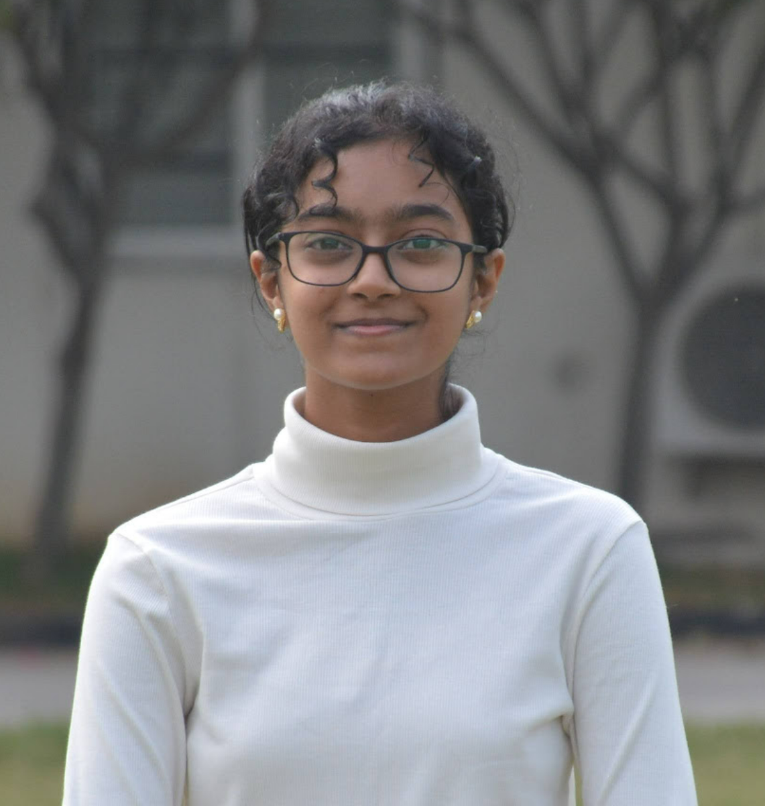

Shreya Seshadri

I am currently studying at Ashoka University (UG 2024). Prior to this, I studied at Silver Oaks International School, following which I took a gap year. I have been fortunate to hold various roles across the university and school community and am passionate about upskilling myself the coming summer as well. I'm soon completing the DexSchool course at Dexterity Global and aspire to major in Economics & Public Policy with a minor in Computer Science going forward.
Furthermore, this website is not intended to be professional in any capacity, mostly personal: just random things about myself which are still relevant to the assignment and helped me learn how to create a website and make it look okay!